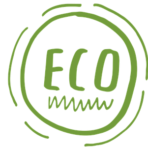
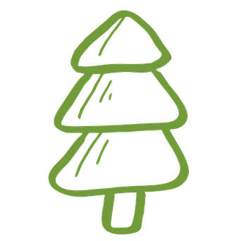

Mundo Verde
Plataforma orientada a concientizar sobre la importancia del reciclaje.
Acerca de nosotros
Somos un grupo de mujeres latinas que busca impulsar la conciencia medio ambiental hasta convertir el reciclaje en un hábito diario para la población, contribuyendo a hacer de este mundo un lugar mejor donde vivir. Creemos que cada uno de nosotros puede hacer una diferencia en el mundo y proteger nuestro planeta. Por eso, nos apasiona incentivar el reciclaje y promover prácticas sostenibles. Ofrecemos soluciones innovadoras y personalizadas para ayudar a las empresas y hogares a reducir su huella de carbono y a contribuir a un mundo más verde.
¿Qué ofrecemos?

CULTURA
Información relevante para educar a las personas sobre los diferentes términos y conceptos relacionados con el reciclaje, con el objetivo de promover una cultura de reciclaje más efectiva y sostenible.
Saber más

PRODUCTOS
Ejemplos de productos que pueden ser creados a partir de materiales reciclados, como papel reciclado, bolsas reutilizables, muebles de plástico reciclado, alfombras de fibra de vidrio reciclada, entre otros.
Saber más

BENEFICIOS
Destacar la importancia del reciclaje como una práctica sostenible y cómo puede beneficiar al medio ambiente, a la economía y a la sociedad en general, promoviendo la conservación de los recursos.
Saber más